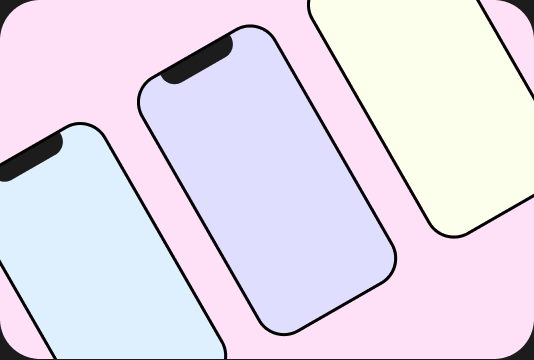

Featured UI/UX Projects
A selection of UI/UX projects focused on creating intuitive and user centered digital experiences.

Jury-X Website Redesign
Redesigned a legal company platform to build trust through clearer navigation and a more intuitive user experience.
UI Design
Information Architecture
Luminary - UI/UX Designer
Designed key interfaces for an accessible navigation app helping UNC students find barrier-free routes across campus.
UI Design
Accessibility

Sonar (Personal Project)
Created a fun, swipe-based music discovery app that matches listeners with new songs.
UI Design
User Research

UI Challenges
Explored creative UI layouts through a series of design challenges focused on accessibility, aesthetics, and experimentation.
Design Thinking